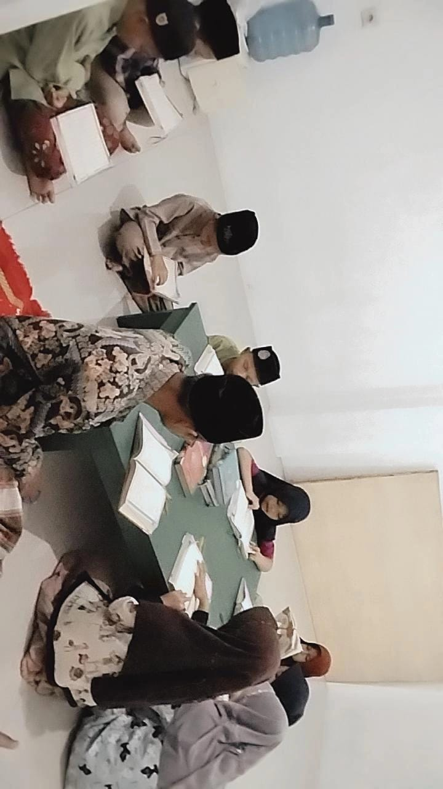

Bagaimana Kami Memulai
Yayasan Bina Umat Padang Wulan Cipicung didirikan atas dasar kepedulian mendalam terhadap kondisi sosial, pendidikan, dan keagamaan masyarakat di Dusun Cipicung, Desa Karangsari, Kecamatan Padaherang, Kabupaten Pangandaran. Berawal dari semangat gotong royong dan tekad untuk menghadirkan wadah pemberdayaan yang sah secara hukum, yayasan ini resmi dibentuk untuk menaungi berbagai kegiatan kebajikan warga.
Sejak awal berdirinya, yayasan terus berkembang menjadi pilar pelayanan publik melalui tiga pilar utama: Sosial, Kemanusiaan, dan Keagamaan. Dari penguatan sarana ibadah dan pendidikan Al-Qur'an hingga aksi tanggap bencana dan advokasi masyarakat, Yayasan Bina Umat Padang Wulan Cipicung terus berkomitmen menebar manfaat berkelanjutan bagi kemajuan umat.

Visi & Misi
Visi
Menjadi lembaga amil, sosial, dan keagamaan yang terpercaya, profesional, serta berdaya guna dalam mewujudkan masyarakat madani yang mandiri, cerdas, dan sejahtera.
Misi
- Menyelenggarakan lembaga pendidikan formal dan non-formal yang berkualitas untuk mencetak generasi yang cerdas dan berakhlak mulia.
- Mengembangkan program pemberdayaan ekonomi umat, sosial kemasyarakatan, serta aksi cepat tanggap kemanusiaan.
- Membina kehidupan beragama yang harmonis melalui pembangunan sarana ibadah, majelis taklim, pondok pesantren, dan pengelolaan ZISWAF yang amanah.
- Membangun jejaring kemitraan strategis dengan masyarakat, relawan, dan pemerintah dalam mendukung kelestarian lingkungan serta pelayanan publik.
Program Kami
Program yang kami jalankan untuk memberikan manfaat nyata bagi masyarakat.
Keagamaan
Membina kerohanian umat melalui pengelolaan sarana ibadah, majelis taklim, TPQ, pondok pesantren, serta pengelolaan zakat dan wakaf.
SelengkapnyaSosial
Menjalankan pendidikan formal/non-formal, pembinaan kebudayaan, dan kegiatan sosial rutin untuk mempererat kepedulian antarwarga.
SelengkapnyaKemanusiaan
Memberikan bantuan cepat tanggap bagi korban bencana alam, layanan duka, pendampingan hukum, serta pelestarian lingkungan hidup.
SelengkapnyaTujuan Yayasan
- Meningkatkan akses dan kualitas pendidikan formal maupun non-formal bagi anak-anak serta masyarakat kurang mampu.
- Mendorong kemandirian ekonomi masyarakat melalui program pemberdayaan, pengelolaan wakaf produktif, dan bank sampah mandiri.
- Memperluas jaringan kepedulian sosial, layanan hukum pro-bono, serta sinergi mitra dan relawan untuk kesejahteraan umat secara berkelanjutan.
Ingin Tahu Lebih Jauh Tentang Program Kami?
Jelajahi program-program yang sedang kami jalankan atau hubungi kami untuk informasi lebih lanjut.